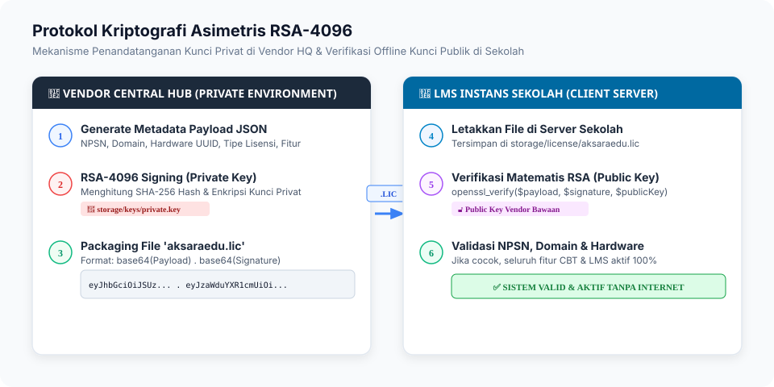
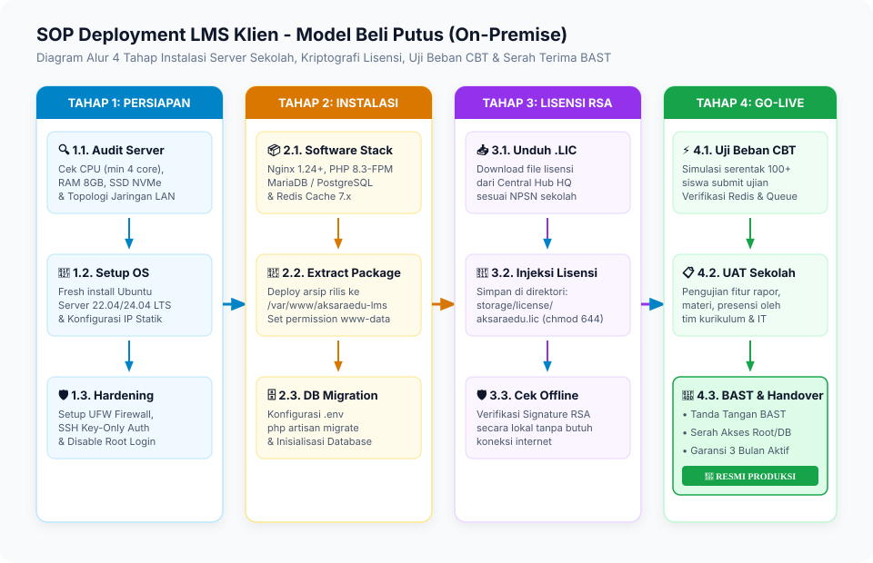
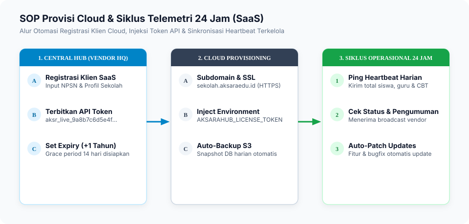
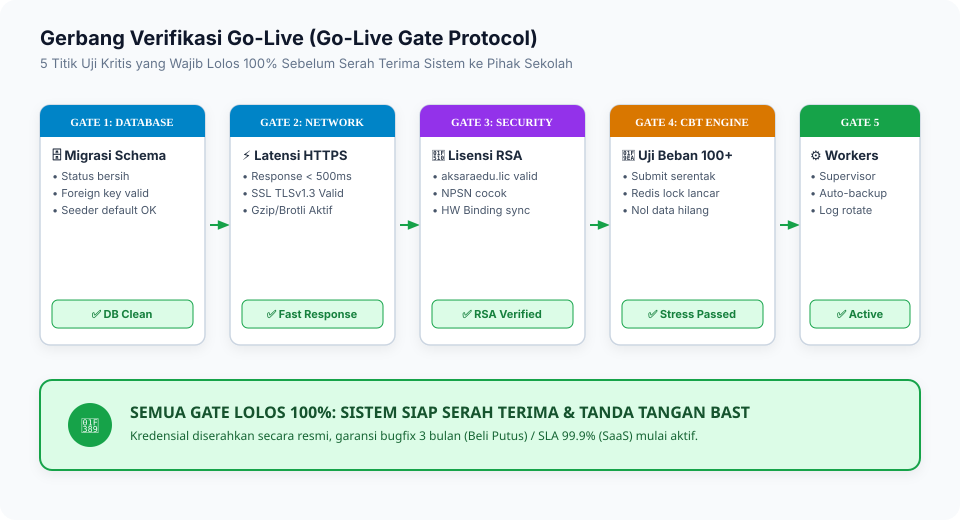
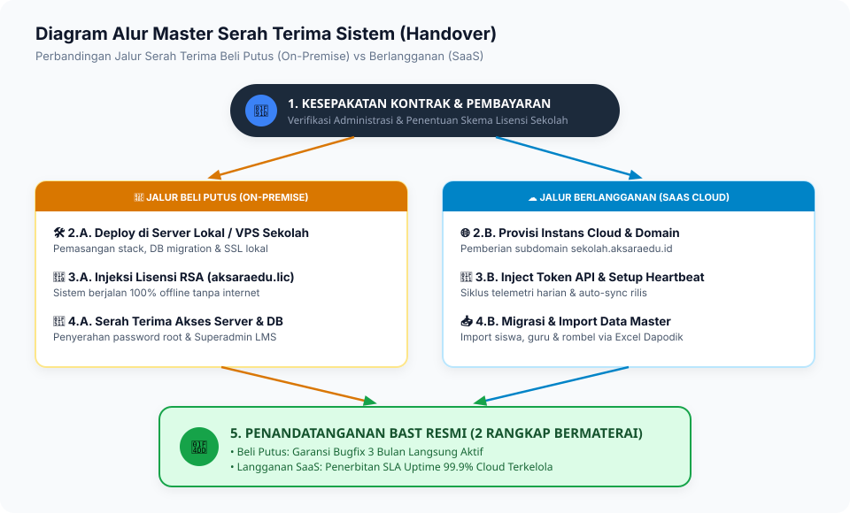
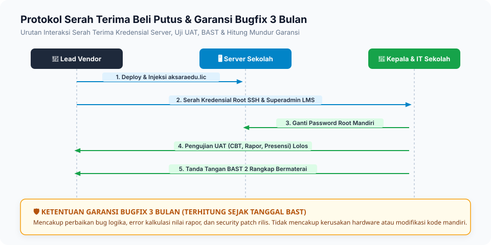
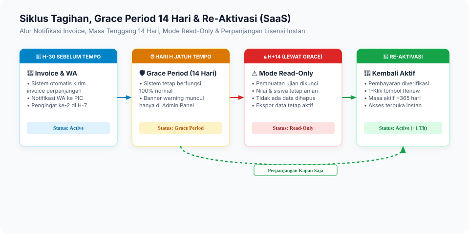
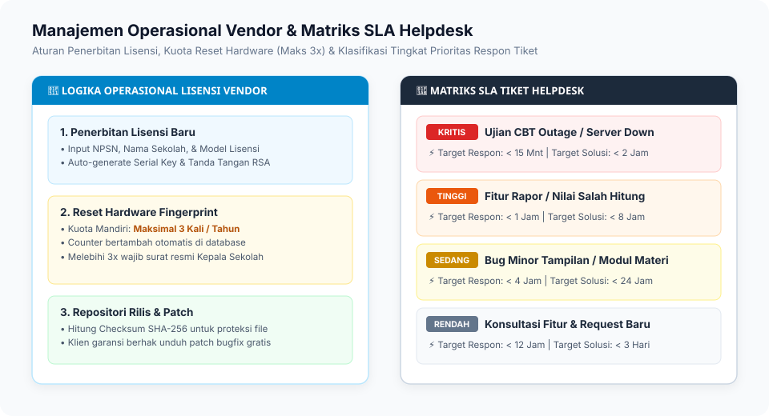
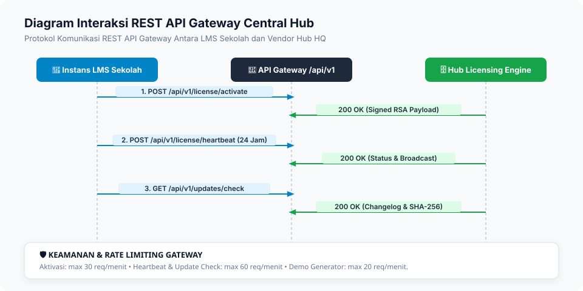

1. Topologi Ekosistem & Arsitektur
Hubungan Central Hub dengan Instans Beli Putus dan SaaS

2. Protokol Kriptografi Asimetris RSA-4096
Penandatanganan Kunci Privat di Hub & Verifikasi Offline Kunci Publik di Sekolah

3. SOP Deployment Beli Putus (On-Premise)
Diagram alur 4 tahap instalasi server sekolah, injeksi lisensi RSA & UAT

4. SOP Provisi SaaS & Telemetri 24 Jam
Otomasi subdomain, token API, dan sinkronisasi heartbeat harian

5. Gerbang Verifikasi Go-Live (Go-Live Gate)
5 titik uji kritis sebelum sistem resmi beroperasi

6. SOP Serah Terima (BAST) & Garansi
Alur handover Beli Putus vs SaaS dan hitung mundur garansi bugfix 3 bulan



7. Manajemen Operasional Vendor & SLA Helpdesk
Logika kuota reset hardware (maks 3x) dan matriks prioritas tiket

8. Diagram REST API Gateway
Protokol komunikasi aktivasi lisensi, heartbeat harian, dan download update
